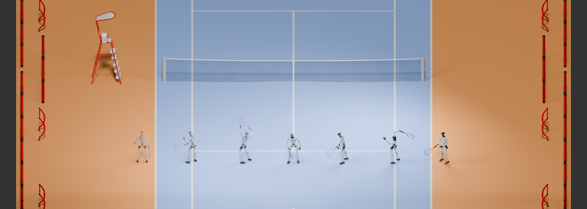
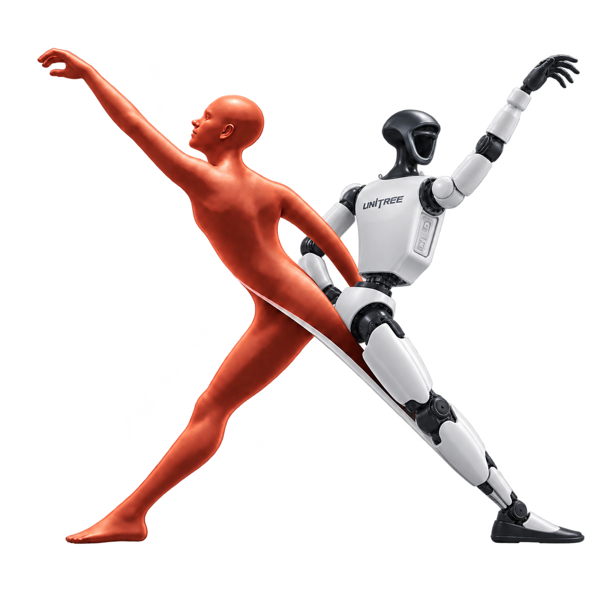
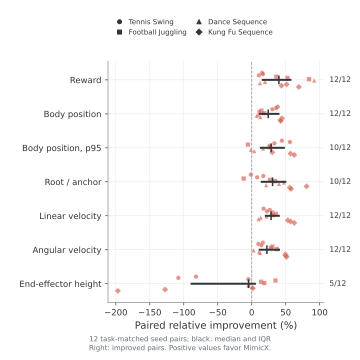
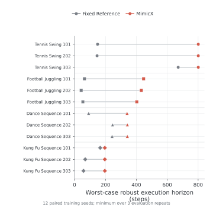
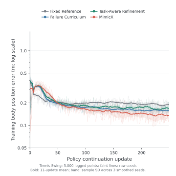
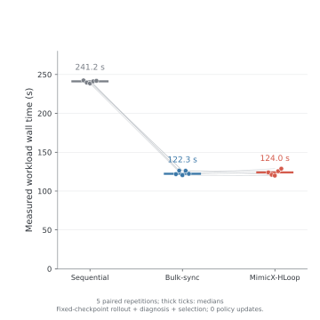

Failure windows and body regions
Rollouts reveal the first failing time window and the body regions responsible for tracking error. Local end-effectors, global body motion and velocity channels identify what needs attention.


MimicX: Policy-in-the-Loop Supervision Refinement
for Video-Driven Humanoid Motion Tracking
From human videos to executable robot motion
MimicX turns video-derived human motion into humanoid tracking policies, then uses policy rollouts to improve training supervision. Failure diagnosis identifies when tracking breaks, where the error concentrates, and which training objectives and curricula to refine.
Fixed Reference to MimicX in the four-task continuation study. Body error is a temporal mean of aligned worst-body distance; horizon is the worst first-failure step across verification repeats.
Policy-in-the-loop supervision refinement
A video provides the motion reference. A policy reveals which parts are difficult to execute. MimicX uses those failures to refine supervision, continue training and verify the next policy.


Rollouts reveal the first failing time window and the body regions responsible for tracking error. Local end-effectors, global body motion and velocity channels identify what needs attention.
Bounded candidates combine local, global and dynamics objectives with failure-window replay. Each continues from the same current policy, preserving the task reference while adapting how it is learned.
Completion, failure horizon and tracking fidelity determine acceptance before reward. A verified candidate becomes the next policy; otherwise, the current policy is retained for the next iteration.
GVHMR and SMPL-X reconstruct the human; GMR retargets the motion; PPO learns tracking in MuJoCo/MjLab. Input preparation establishes the registered reference, which stays fixed within an AutoRefine loop.
Recorded policy execution
Tennis: MimicX reaches strict success in all nine core evaluation rollouts. Videos illustrate a selected recorded trial.
Solid geometry is the executed robot; transparent geometry is the reference. The header and workflow use recorded motion in presentation scenes. Court props provide visual context; evaluation measures humanoid motion tracking.
Controlled continuation study
Four tasks, four methods, three continuation seeds and three verification repeats: 48 method-task-seed trials and 144 final evaluation rollouts. The table retains every core task.
| Task | Method | Strict success | Execution horizon | Body error |
|---|---|---|---|---|
| Tennis Swing | Fixed Reference | 11.1% | 322.0 | 0.241 m |
| Tennis Swing | MimicX | 100.0% | 801.0 | 0.157 m |
| Football Juggling | Fixed Reference | 0.0% | 53.7 | 0.286 m |
| Football Juggling | MimicX | 0.0% | 427.3 | 0.244 m |
| Dance Sequence | Fixed Reference | 0.0% | 193.3 | 0.270 m |
| Dance Sequence | MimicX | 0.0% | 341.3 | 0.244 m |
| Kung Fu Sequence | Fixed Reference | 0.0% | 97.7 | 0.249 m |
| Kung Fu Sequence | MimicX | 0.0% | 196.0 | 0.141 m |
Success uses the full evaluation budget. An unfailed rollout uses H + 1 as its horizon sentinel. Trials share a task-specific warmstart; protected Dance/Kung Fu outputs retain that checkpoint. Full component results and metric definitions are included below.




MimicX-HLoop
GPU rollout jobs feed CPU diagnosis and final report selection. Dependency-ready execution overlaps independent work without changing the frozen policies, inputs or evaluation budget.
| Executor | Median time | Speedup vs sequential |
|---|---|---|
| Sequential | 241.221 s | 1.000× |
| Bulk-synchronous | 122.258 s | 1.973× |
| MimicX-HLoop | 124.017 s | 1.945× |
All modes have matching report selections. This workload performs zero PPO updates; timing measures execution efficiency, not policy convergence.
Open-source release
The release includes G1 tracking policies for tennis, football, dance and kung fu, along with matching robot references. Reproduction configurations, continuation checkpoints and verification records connect each policy to its experiment.
Download one recommended policy and its matching reference to start. The full Hugging Face release also preserves multi-seed baselines, candidate checkpoints, execution records and HLoop evidence. Training code, pinned backend setup and paper configurations are in the code repository.